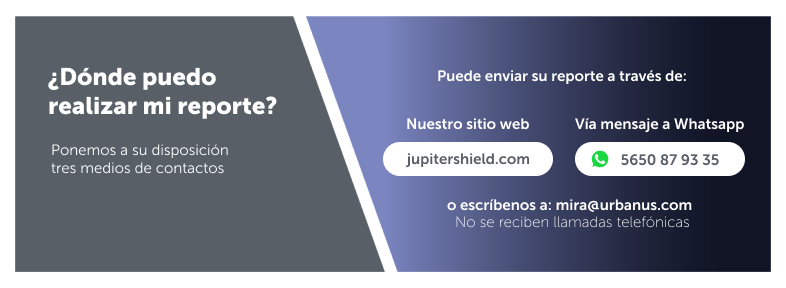
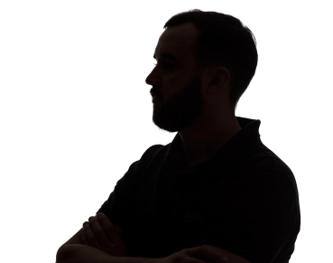

|
¿Qué es MIRA?MIRA, Modelo Integral de Reporte de Anomalías, es un sistema diseñado para permitir a todos los colaboradores generar reportes anónimos sobre cualquier anomalía o situación que pueda afectar la integridad de nuestra organización. Este proceso refleja nuestro compromiso con la transparencia, la ética y la mejora continua en todas las líneas de negocio que conforman Grupo Urbanus®. Todos los colaboradores tienen acceso seguro a la plataforma MIRA para realizar cualquier tipo de reportes que afecten a nuestra organización en sus personas, sus bienes o su información. Realiza tus reportes a través de los siguientes medios que ponemos a tu disposición. |
|  |
Reportes Anónimos:Los colaboradores pueden generar reportes anónimos, proporcionando detalles sobre cualquier anomalía que identifiquen en su entorno laboral. Seguimiento y Acciones: Un equipo especializado revisará cada reporte y tomará las acciones necesarias para abordar las anomalías identificadas. Prevención de Riesgos: MIRA no solo identifica problemas existentes, sino que también nos ayuda a prevenir riesgos futuros mediante la implementación de medidas preventivas. |
 |
Reportes Anónimos:Los colaboradores pueden generar reportes anónimos, proporcionando detalles sobre cualquier anomalía que identifiquen en su entorno laboral. Seguimiento y Acciones: Un equipo especializado revisará cada reporte y tomará las acciones necesarias para abordar las anomalías identificadas. Prevención de Riesgos: MIRA no solo identifica problemas existentes, sino que también nos ayuda a prevenir riesgos futuros mediante la implementación de medidas preventivas. |